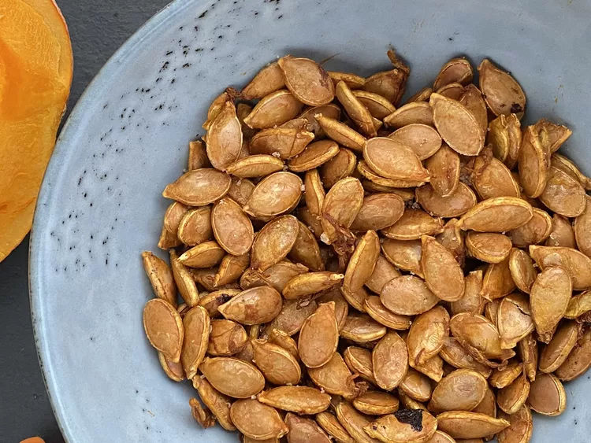

Air Fryer Pumpkin Seeds
Description
These air fryer pumpkin seeds are wonderfully crunchy with just a hint of smoky flavor. Best served cold.
Ingredients
- 1 ¾ cups pumpkin seeds
- 2 teaspoons avocado oil
- 1 teaspoon smoked paprika
- 1 teaspoon salt
Steps
Place pumpkin seeds in a colander and rinse well.
Cover a plate with two paper towels. Spread pumpkin seeds over top and cover with two more paper towels. Gently press to remove most of the water. Let sit until thoroughly dried, at least 15 minutes.
Preheat an air fryer to 350 degrees F (180 degrees C).
Transfer dried seeds to a medium bowl. Add avocado oil, paprika, and salt and mix until seeds are well coated. Transfer to the air fryer basket.
Cook in the preheated air fryer for 35 minutes, shaking the basket frequently. Watch carefully during the last 5 minutes; the pumpkin seeds can go from perfectly cooked to burned very quickly.